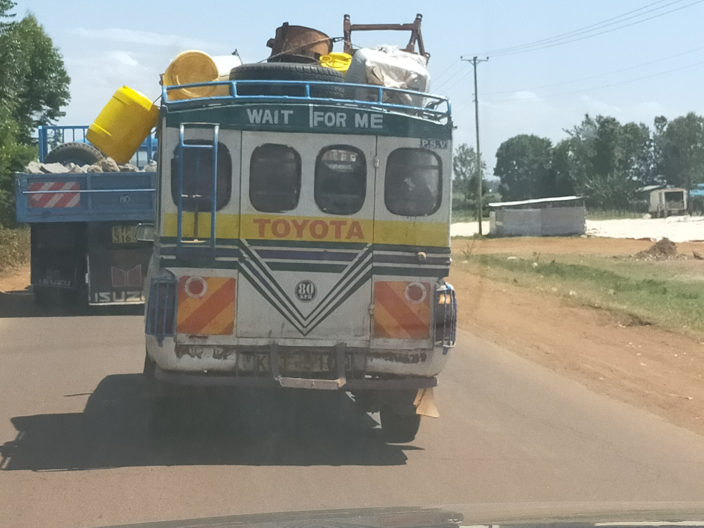

Right side
A matatu ferrying people

trees for conservation
As elaborated in the initial module, Industrial IoT provides benefits to different industries. Nevertheless, they also introduce more attack surfaces which can put critical systems at risk. Security-engineering and design is about building systems to remain dependable in the face of malice, error, or mischance [1]. Since we are introducing more devices into the Internet, we need to have a strategy to incorporate security by default.
A good security engineer should be able to understand business processes around the defined IIoT deployment. They develop tools, processes, and methods that assist in the designing secure IIoT systems. These systems have to be tested for different case scenarios as it helps to build systems that can keep up with their evolving environments.
Most IIoT deployments intersect or support other critical infrastructure. This therefore means, if they are hacked or fail due to technical errors, they can disrupt critical operations or cause death. Critical operations include but not limited to medical systems, energy plants/grids, water reservoir, nuclear plants and transport systems.
A matatu ferrying people
trees for conservation